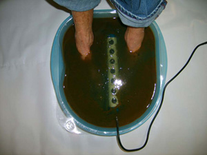

Ionics S.P.A. is a foot detox therapy which uses ionized water to remove the body's toxins by generating a mix of positive and negative ions which are able to attach themselves to impurities that are oppositely charged and eliminating them through the reflex points of the feet by the way of osmosis. Positive ions help in hydration, kill bacteria and fungus on contact, sooth the nerves and is used as a medical disinfectant. Negative ions stimulate the nerves, increase blood circulation and soften tissue.
FOOT IONIC S.P.A.
Before:

After:
